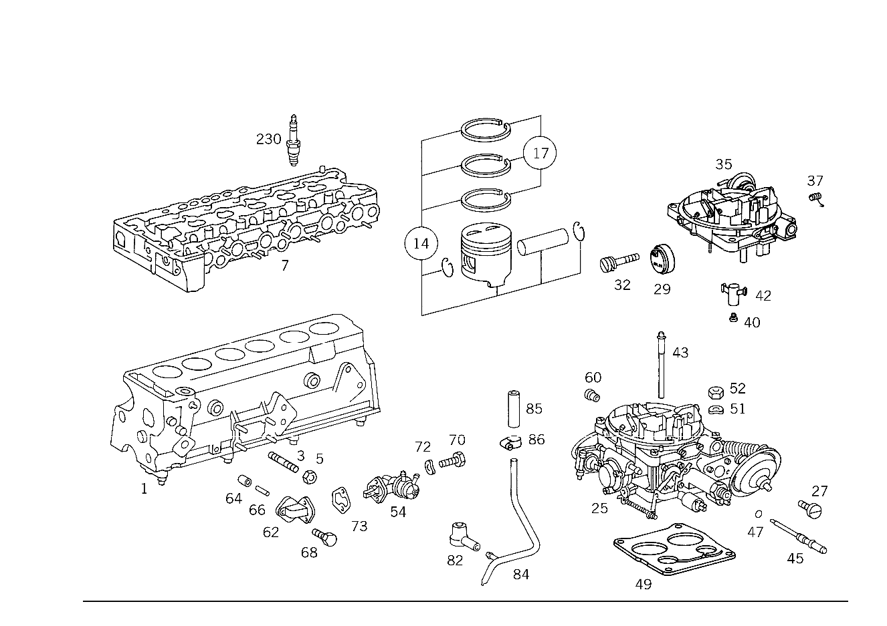

| № | Артикул | Название | Кол. | Примечание | Ограничение |
|---|---|---|---|---|---|
| 1 | A 110 010 01 06 | БЛОК ЦИЛИНДРОВ | - | Z 12.358/01, Z 12.358/02 [004] ИСПОЛЬЗОВАТЬ СТАРЫЙ НОМЕР ДЕТАЛИ ДО ДВИГАТЕЛЯ 110.921 040762 110.922 030468 | |
| 1 | A 110 010 03 06 | БЛОК ЦИЛИНДРОВ | 1 | С ПОДОГНАН. ПОРШНЯМИ Z 12.358/01, Z 12.358/02 [417] БОЛЬШЕ НЕ ПОСТАВЛЯЕТСЯ, ЗАКАЗЫВАТЬ КОМПЛЕКТ ПОСТАВКИ | |
| 3 | N 000939 010011 | Шпилька | 1 | МАСЛЯНЫЙ ТРУБОПРОВОД НА БЛОКЕ ЦИЛИНДРОВ Z 12.358/01, Z 12.358/02 | |
| 5 | N 000934 010009 | Гайка | - | Z 12.358/01, Z 12.358/02 | |
| 5 | N 304032 010002 | Шестигранная гайка | 1 | КРОНШТЕЙН ОПОРЫ ДВИГАТЕЛЯ НА БЛОКЕ ЦИЛИНДРОВ; M10 Z 12.358/01, Z 12.358/02 | |
| 7 | A 110 010 64 20 | ГОЛОВКА БЛОКА ЦИЛИНДРОВ | - | Z 12.358/01, Z 12.358/02 | |
| 7 | A 110 010 76 20 | ГОЛОВКА БЛОКА ЦИЛИНДРОВ | - | Z 12.358/01, Z 12.358/02 | |
| 7 | A 110 010 53 21 | ГОЛОВКА БЛОКА ЦИЛИНДРОВ | - | Z 12.358/01, Z 12.358/02 [010] DELIVER ADDITIONALLY 6 EXPANSION PLUG 000443 018000 | |
| 7 | A 110 010 63 21 | ГОЛОВКА БЛОКА ЦИЛИНДРОВ | 1 | Z 12.358/01, Z 12.358/02 | |
| 14 | A 110 030 28 17 | ПОРШЕНЬ | - | Z 12.358/01, Z 12.358/02 | |
| 14 | A 110 030 72 17 | ПОРШЕНЬ | 6 | НОРМАЛЬНО 86.00 MM Z 12.358/01, Z 12.358/02 | |
| 14 | A 110 030 75 17 | ПОРШЕНЬ | 6 | НОРМАЛЬНО 86.00 MM Z 12.358/01, Z 12.358/02 | |
| 14 | A 110 030 29 17 | ПОРШЕНЬ | - | Z 12.358/01, Z 12.358/02 | |
| 14 | A 110 030 73 17 | ПОРШЕНЬ | 6 | РЕМОНТНАЯ ГРУППА I 86.50MM Z 12.358/01, Z 12.358/02 | |
| 14 | A 110 030 76 17 | ПОРШЕНЬ | 6 | РЕМОНТНАЯ ГРУППА I 86.50MM Z 12.358/01, Z 12.358/02 | |
| 14 | A 110 030 30 17 | ПОРШЕНЬ | - | Z 12.358/01, Z 12.358/02 | |
| 14 | A 110 030 74 17 | ПОРШЕНЬ | 6 | РЕМОНТНАЯ ГРУППА II Z 12.358/01, Z 12.358/02 [402] БОЛЬШЕ НЕ ПОСТАВЛЯЕТСЯ | |
| 14 | A 110 030 77 17 | ПОРШЕНЬ | 6 | РЕМОНТНАЯ ГРУППА II Z 12.358/01, Z 12.358/02 | |
| 17 | A 004 586 16 03 | - РЕМКОМПЛЕКТ | - | Z 12.358/01, Z 12.358/02 | |
| 17 | A 004 586 00 03 | - РЕМКОМПЛЕКТ | - | Z 12.358/01, Z 12.358/02 | |
| 17 | A 004 586 35 03 | - РЕМКОМПЛЕКТ | - | Z 12.358/01, Z 12.358/02 | |
| 17 | A 001 030 32 24 | - КОЛЬЦО ПОРШНЕВОЕ | 6 | НОРМАЛЬНО Z 12.358/01, Z 12.358/02 | |
| 17 | A 004 586 17 03 | - РЕМКОМПЛЕКТ | - | Z 12.358/01, Z 12.358/02 | |
| 17 | A 004 586 01 03 | - РЕМКОМПЛЕКТ | - | Z 12.358/01, Z 12.358/02 | |
| 17 | A 004 586 36 03 | - РЕМКОМПЛЕКТ | - | Z 12.358/01, Z 12.358/02 | |
| 17 | A 001 030 33 24 | - КОЛЬЦО ПОРШНЕВОЕ | 6 | РЕМОНТНАЯ ГРУППА I Z 12.358/01, Z 12.358/02 [402] БОЛЬШЕ НЕ ПОСТАВЛЯЕТСЯ | |
| 17 | A 004 586 18 03 | - РЕМКОМПЛЕКТ | - | Z 12.358/01, Z 12.358/02 | |
| 17 | A 004 586 02 03 | - РЕМКОМПЛЕКТ | - | Z 12.358/01, Z 12.358/02 | |
| 17 | A 004 586 37 03 | - РЕМКОМПЛЕКТ | - | Z 12.358/01, Z 12.358/02 | |
| 17 | A 001 030 34 24 | - КОЛЬЦО ПОРШНЕВОЕ | 6 | Z 12.358/01, Z 12.358/02 | |
| 25 | A 001 070 22 04 | КАРБЮРАТОР | 1 | Z 12.358/01, Z 12.358/02 [402] БОЛЬШЕ НЕ ПОСТАВЛЯЕТСЯ | |
| 27 | A 001 071 11 71 | - БОЛТ | 4 | Z 12.358/01, Z 12.358/02 [402] БОЛЬШЕ НЕ ПОСТАВЛЯЕТСЯ | |
| 29 | A 000 071 23 28 | - КРЫШКА СТАРТЕРА | 1 | Z 12.358/01, Z 12.358/02 [402] БОЛЬШЕ НЕ ПОСТАВЛЯЕТСЯ | |
| 32 | A 001 071 31 71 | - БОЛТ | 1 | Z 12.358/01, Z 12.358/02 | |
| 35 | A 000 071 49 04 | - КРЫШКА | - | Z 12.358/01, Z 12.358/02 | |
| 35 | A 000 071 56 04 | - КРЫШКА | 1 | Z 12.358/01, Z 12.358/02 [402] БОЛЬШЕ НЕ ПОСТАВЛЯЕТСЯ | |
| 37 | A 000 071 52 16 | - ПРУЖИНА | - | Z 12.358/01, Z 12.358/02 | |
| 37 | A 000 071 60 16 | - ПРУЖИНА | 1 | Z 12.358/01, Z 12.358/02 | |
| 40 | A 000 071 84 35 | - ФОРСУНКА | 2 | MAIN NOZZLE X 105 Z 12.358/01, Z 12.358/02 | |
| 42 | A 000 071 24 49 | - СМЕСИТЕЛЬНЫЙ ТРУБОПРОВОД | 2 | Z 12.358/01, Z 12.358/02 [402] БОЛЬШЕ НЕ ПОСТАВЛЯЕТСЯ | |
| 43 | A 000 071 73 34 | - ФОРСУНКА | - | Z 12.358/01, Z 12.358/02 | |
| 43 | A 000 071 74 34 | - ФОРСУНКА | 2 | Z 12.358/01, Z 12.358/02 [402] БОЛЬШЕ НЕ ПОСТАВЛЯЕТСЯ | |
| 45 | A 000 071 37 36 | - ФОРСУНКА | 2 | Z 12.358/01, Z 12.358/02 [402] БОЛЬШЕ НЕ ПОСТАВЛЯЕТСЯ | |
| 47 | A 000 071 27 60 | - УПЛОТНИТ. КОЛЬЦО | 2 | Z 12.358/01, Z 12.358/02 | |
| 49 | A 110 071 05 80 | ПРОКЛАДКА УПЛОТНИТЕЛЬНАЯ | - | Z 12.358/01, Z 12.358/02 | |
| 49 | A 110 071 09 80 | ПРОКЛАДКА УПЛОТНИТЕЛЬНАЯ | 1 | Z 12.358/01, Z 12.358/02 | |
| 51 | N 000137 008204 | Пружинная шайба | - | Z 12.358/01, Z 12.358/02 | |
| 51 | N 000137 008212 | Пружинная шайба | 4 | Z 12.358/01, Z 12.358/02 | |
| 52 | A 000 990 08 51 | гайка | 4 | Z 12.358/01, Z 12.358/02 [402] БОЛЬШЕ НЕ ПОСТАВЛЯЕТСЯ | |
| 54 | A 002 091 03 01 | ТОПЛИВНЫЙ | - | Z 12.358/01, Z 12.358/02 | |
| 54 | A 002 091 12 01 | ТОПЛИВНЫЙ | - | Z 12.358/01, Z 12.358/02 | |
| 54 | A 002 091 82 01 | ТОПЛИВНЫЙ | 1 | Z 12.358/01, Z 12.358/02 | |
| 60 | A 000 071 71 34 | ФОРСУНКА | 1 | Z 12.358/01, Z 12.358/02 | |
| 62 | A 110 090 00 40 | КРОНШТЕЙН | - | Z 12.358/01, Z 12.358/02 [008] ИСПОЛЬЗОВАТЬ СТАРЫЙ НОМЕР ДЕТАЛИ ДО ДВИГАТЕЛЯ 110.921 10/50,20/60 010310 110.921 12/52,22/62 044591 110.922 10/50,20/60 023613 110.922 12/52,22/62 039550 | |
| 62 | A 110 090 01 44 | ФЛАНЕЦ | 1 | Z 12.358/01, Z 12.358/02 [402] БОЛЬШЕ НЕ ПОСТАВЛЯЕТСЯ | |
| 64 | A 130 091 00 50 | - ВТУЛКА | 1 | Z 12.358/01, Z 12.358/02 | |
| 66 | A 110 091 01 08 | ТОЛКАТЕЛЬ | 1 | Z 12.358/01, Z 12.358/02 [402] БОЛЬШЕ НЕ ПОСТАВЛЯЕТСЯ | |
| 68 | N 304014 008004 | Винт с 6-гранной головкой | - | Z 12.358/01, Z 12.358/02 | |
| 68 | N 304014 008001 | Винт с 6-гранной головкой | 1 | ПРОМЕЖУТОЧНЫЙ ФЛАНЕЦ НА БЛОКЕ ДВИГАТЕЛЯ; M8X70\-10.9 Z 12.358/01, Z 12.358/02 | |
| 70 | N 000933 008116 | Винт | - | M8X28\-8.8 Z 12.358/01, Z 12.358/02 | |
| 70 | N 000933 008337 | Винт | - | Z 12.358/01, Z 12.358/02 | |
| 70 | A 009 990 01 01 | болт | 2 | НАСОС НА ПРОМЕЖУТОЧНОМ ФЛАНЦЕ Z 12.358/01, Z 12.358/02 | |
| 72 | N 000137 008204 | Пружинная шайба | - | Z 12.358/01, Z 12.358/02 | |
| 72 | N 000137 008212 | Пружинная шайба | 2 | НАСОС НА ПРОМЕЖУТОЧНОМ ФЛАНЦЕ Z 12.358/01, Z 12.358/02 | |
| 73 | A 181 091 00 80 | Уплотнительная прокладка | 1 | НАСОС НА ПРОМЕЖУТОЧНОМ ФЛАНЦЕ Z 12.358/01, Z 12.358/02 | |
| 74 | A 009 094 37 02 | ВОЗДУШНЫЙ ФИЛЬТР | 1 | Z 12.358/01, Z 12.358/02 [402] БОЛЬШЕ НЕ ПОСТАВЛЯЕТСЯ | |
| 76 | A 001 094 69 04 | - ЭЛЕМЕНТ ФИЛЬТРУЮЩИЙ | 1 | Z 12.358/01, Z 12.358/02 | |
| 77 | A 001 094 52 80 | - уплотнение | 1 | Z 12.358/01, Z 12.358/02 | |
| 78 | A 001 094 39 80 | - ПРОКЛАДКА УПЛОТНИТЕЛЬНАЯ | - | Z 12.358/01, Z 12.358/02 | |
| 78 | A 001 094 53 80 | - ПРОКЛАДКА УПЛОТНИТЕЛЬНАЯ | 1 | Z 12.358/01, Z 12.358/02 [402] БОЛЬШЕ НЕ ПОСТАВЛЯЕТСЯ | |
| 80 | A 000 094 06 64 | - РЕГУЛЯТОР | 1 | Z 12.358/01, Z 12.358/02 [402] БОЛЬШЕ НЕ ПОСТАВЛЯЕТСЯ | |
| 81 | A 000 094 03 74 | - БОЛТ | 1 | Z 12.358/01, Z 12.358/02 [402] БОЛЬШЕ НЕ ПОСТАВЛЯЕТСЯ | |
| 82 | A 110 997 26 82 | ШЛАНГ | 1 | ВЕНТИЛЯЦИЯ Z 12.358/01, Z 12.358/02 | |
| 84 | A 110 010 02 70 | ТРУБКА ВЕНТИЛЯЦИИ | 1 | ВЕНТИЛЯЦИЯ Z 12.358/01, Z 12.358/02 | |
| 85 | N 900271 008025 | ШЛАНГ | 1 | ВЕНТИЛЯЦИЯ Z 12.358/01, Z 12.358/02 [404] ЗАКАЗЫВАТЬ ПОГОННЫМИ МЕТРАМИ | |
| 86 | N 916026 010000 | Хомут | - | Z 12.358/01, Z 12.358/02 | |
| 86 | A 000 995 35 07 | Хомут | 2 | ВЕНТИЛЯЦИЯ; 12\-22 MM Z 12.358/01, Z 12.358/02 | |
| 87 | A 110 140 25 01 | ВПУСКНОЙ КОЛЛЕКТОР | - | Z 12.358/01, Z 12.358/02 | |
| 87 | A 110 140 27 01 | ВПУСКНОЙ КОЛЛЕКТОР | - | Z 12.358/01, Z 12.358/02 | |
| 87 | A 110 140 48 01 | ВПУСКНОЙ КОЛЛЕКТОР | 1 | Z 12.358/01, Z 12.358/02 [402] БОЛЬШЕ НЕ ПОСТАВЛЯЕТСЯ | |
| 90 | A 110 997 11 30 | - ЗАГЛУШКА РЕЗЬБОВАЯ | 1 | Z 12.358/01, Z 12.358/02 | |
| 92 | N 000443 019000 | - Запорная крышка | 1 | Z 12.358/01, Z 12.358/02 | |
| 94 | N 000835 008075 | - Винт | 4 | Z 12.358/01, Z 12.358/02 | |
| 97 | A 110 460 19 35 | ДЕРЖАТЕЛЬ | 1 | СПЕРЕДИ Z 12.358/01, Z 12.358/02 [402] БОЛЬШЕ НЕ ПОСТАВЛЯЕТСЯ | |
| 99 | N 000933 010238 | Винт | - | Z 12.358/01, Z 12.358/02 | |
| 99 | N 304017 010028 | Винт с 6-гранной головкой | 2 | M10X20\-8.8 Z 12.358/01, Z 12.358/02 | |
| 102 | A 110 460 20 35 | ДЕРЖАТЕЛЬ | 1 | СЗАДИ Z 12.358/01, Z 12.358/02 [402] БОЛЬШЕ НЕ ПОСТАВЛЯЕТСЯ | |
| 105 | N 000933 010238 | Винт | - | Z 12.358/01, Z 12.358/02 | |
| 105 | N 304017 010028 | Винт с 6-гранной головкой | 1 | M10X20\-8.8 Z 12.358/01, Z 12.358/02 | |
| 107 | N 006912 008020 | БОЛТ | 1 | Z 12.358/01, Z 12.358/02 | |
| 110 | A 000 140 04 85 | НАСОС | - | Z 12.358/01, Z 12.358/02 | |
| 110 | A 000 140 06 85 | НАСОС | 1 | ВОЗДУХ Z 12.358/01, Z 12.358/02 | |
| 113 | A 110 141 02 39 | ШКИВ | 1 | Z 12.358/01, Z 12.358/02 | |
| 115 | N 000137 007101 | ШАЙБА ПРУЖИННАЯ | 1 | Z 12.358/01, Z 12.358/02 | |
| 117 | A 002 990 45 01 | БОЛТ | 1 | TO 000 140 04 85 Z 12.358/01, Z 12.358/02 | |
| 120 | A 110 992 00 05 | ВТУЛКА | 2 | ВОЗДУШ. НАСОС НА КРОНШТЕЙН TO 000 140 04 85 Z 12.358/01, Z 12.358/02 | |
| 122 | A 002 990 24 01 | БОЛТ | 1 | ВОЗДУШ. НАСОС НА КРОНШТЕЙН TO 000 140 04 85 Z 12.358/01, Z 12.358/02 [402] БОЛЬШЕ НЕ ПОСТАВЛЯЕТСЯ | |
| 122 | N 000931 008328 | Винт | 1 | ВОЗДУШ. НАСОС НА КРОНШТЕЙН Z 12.358/01, Z 12.358/02 | |
| 124 | N 000125 010518 | Шайба | - | Z 12.358/01, Z 12.358/02 | |
| 124 | N 000125 010532 | Шайба | 1 | ВОЗДУШ. НАСОС НА КРОНШТЕЙН Z 12.358/01, Z 12.358/02 | |
| 126 | A 003 997 25 92 | РЕМЕНЬ КЛИНОВОЙ | - | Z 12.358/01, Z 12.358/02 | |
| 126 | A 003 997 55 92 | РЕМЕНЬ КЛИНОВОЙ | - | Z 12.358/01, Z 12.358/02 | |
| 126 | A 006 997 02 92 | РЕМЕНЬ КЛИНОВОЙ | - | 9.5X910 Z 12.358/01, Z 12.358/02 [414] СТАРУЮ ДЕТАЛЬ УСТАНАВЛИВАТЬ БОЛЬШЕ НЕ РАЗРЕШАЕТСЯ | |
| 126 | A 006 997 02 92 | РЕМЕНЬ КЛИНОВОЙ | 1 | 9.5X910 Z 12.358/01, Z 12.358/02 | |
| 129 | A 110 141 02 83 | ШЛАНГ | 1 | ВОЗДУШ.НАСОС К ОТКЛЮЧ.КЛАПАНУ Z 12.358/01, Z 12.358/02 | |
| 131 | N 916026 020001 | Хомут | - | 20\-27 MM Z 12.358/01, Z 12.358/02 | |
| 131 | N 000000 000667 | Хомут | 2 | 23\-30 MM Z 12.358/01, Z 12.358/02 | |
| 133 | A 000 140 18 60 | КЛАПАН | 1 | BLOW\-OFF BOOSTER VALVE Z 12.358/01, Z 12.358/02 [402] БОЛЬШЕ НЕ ПОСТАВЛЯЕТСЯ | |
| 135 | A 110 142 01 40 | ДЕРЖАТЕЛЬ | 1 | Z 12.358/01, Z 12.358/02 | |
| 137 | N 000933 006122 | Винт | - | Z 12.358/01, Z 12.358/02 | |
| 137 | N 304017 006034 | Винт с 6-гранной головкой | 2 | Z 12.358/01, Z 12.358/02 | |
| 140 | A 110 141 03 83 | ШЛАНГ | 1 | FROM BLOW\-OFF VALVE TO FILTER Z 12.358/01, Z 12.358/02 | |
| 142 | A 117 997 01 90 | Хомут для шланга | 2 | Z 12.358/01, Z 12.358/02 | |
| 143 | A 110 995 00 65 | хомут | - | Z 12.358/01, Z 12.358/02 | |
| 143 | A 000 476 04 36 | Держатель шланга | 1 | ФОРМ. ШЛАНГ НА ТОПЛ. ШЛАНГЕ Z 12.358/01, Z 12.358/02 | |
| 144 | A 110 995 01 65 | хомут | 1 | ФОРМ. ШЛАНГ НА ТОПЛ. ШЛАНГЕ; 19 MM Z 12.358/01, Z 12.358/02 | |
| 145 | A 110 141 01 83 | ШЛАНГ | 1 | FROM BLOW\-OFF VALVE TO AIR LINE Z 12.358/01, Z 12.358/02 | |
| 146 | A 117 997 01 90 | Хомут для шланга | 2 | Z 12.358/01, Z 12.358/02 | |
| 147 | A 110 141 00 83 | ШЛАНГ | 1 | FROM AIR LINE TO CHECK VALVE Z 12.358/01, Z 12.358/02 | |
| 148 | A 117 997 01 90 | Хомут для шланга | 2 | Z 12.358/01, Z 12.358/02 | |
| 150 | A 000 140 01 60 | КЛАПАН | 1 | ОБРАТНЫЙ КЛАПАН Z 12.358/01, Z 12.358/02 | |
| 150 | A 000 140 42 60 | КЛАПАН | 1 | ОБРАТНЫЙ КЛАПАН Z 12.358/01, Z 12.358/02 | |
| 153 | A 110 140 21 12 | ТРУБОПРОВОД | 1 | ПРОДУВКА КАТАЛИЗАТОРА Z 12.358/01, Z 12.358/02 [402] БОЛЬШЕ НЕ ПОСТАВЛЯЕТСЯ | |
| 155 | N 915013 006002 | Штуцер | 6 | Z 12.358/01, Z 12.358/02 | |
| 157 | N 007603 012110 | Уплотнительное кольцо | 6 | Z 12.358/01, Z 12.358/02 | |
| 160 | A 110 140 02 40 | ДЕРЖАТЕЛЬ | 1 | ТРУБОПР.ПРОДУВКИ КАТАЛИЗ. Z 12.358/01, Z 12.358/02 [402] БОЛЬШЕ НЕ ПОСТАВЛЯЕТСЯ | |
| 162 | N 000933 006084 | Винт | - | Z 12.358/01, Z 12.358/02 | |
| 162 | N 304017 006026 | Винт с 6-гранной головкой | 1 | M6X40 Z 12.358/01, Z 12.358/02 | |
| 164 | N 000125 006421 | Шайба | 1 | Z 12.358/01, Z 12.358/02 | |
| 164 | N 000125 006449 | Шайба | 1 | Z 12.358/01, Z 12.358/02 | |
| 167 | A 110 142 25 02 | ВЫПУСКНОЙ КОЛЛЕКТОР | 1 | ЦИЛИНДРЫ 1\-3 Z 12.358/01, Z 12.358/02 [402] БОЛЬШЕ НЕ ПОСТАВЛЯЕТСЯ | |
| 169 | A 094 990 97 07 | Уплотнительное кольцо | 1 | Z 12.358/01, Z 12.358/02 | |
| 171 | A 110 997 22 72 | ШТУЦЕР | 1 | Z 12.358/01, Z 12.358/02 | |
| 173 | A 000 990 73 67 | Кольцо | 1 | Z 12.358/01, Z 12.358/02 | |
| 175 | N 003870 015101 | НАКИДНАЯ ГАЙКА | - | Z 12.358/01, Z 12.358/02 | |
| 175 | N 915017 015100 | Гайка | - | Z 12.358/01, Z 12.358/02 | |
| 175 | A 094 990 65 02 | Гайка | 1 | M22X1.5 Z 12.358/01, Z 12.358/02 | |
| 179 | A 110 141 34 04 | ТРУБКА | 1 | FROM EXHAUST MANIFOLD TO FITTING Z 12.358/01, Z 12.358/02 [402] БОЛЬШЕ НЕ ПОСТАВЛЯЕТСЯ | |
| 181 | A 002 997 75 72 | ШТУЦЕР | 1 | Z 12.358/01, Z 12.358/02 [402] БОЛЬШЕ НЕ ПОСТАВЛЯЕТСЯ | |
| 183 | A 000 990 73 67 | Кольцо | 2 | Z 12.358/01, Z 12.358/02 | |
| 185 | A 000 990 68 54 | Накидная гайка | 2 | Z 12.358/01, Z 12.358/02 | |
| 187 | A 110 141 25 04 | ТРУБКА | 1 | FROM FITTING TO EXHAUST GAS RETURN VALVE Z 12.358/01, Z 12.358/02 [402] БОЛЬШЕ НЕ ПОСТАВЛЯЕТСЯ | |
| 189 | A 000 140 20 60 | КЛАПАН | 1 | РЕЦИРКУЛЯЦИЯ ОГ Z 12.358/01, Z 12.358/02 | |
| 192 | A 110 141 16 40 | ДЕРЖАТЕЛЬ | 1 | Z 12.358/01, Z 12.358/02 | |
| 194 | N 000933 006127 | Винт | 1 | M6X25 Z 12.358/01, Z 12.358/02 | |
| 196 | A 000 990 73 67 | Кольцо | 2 | Z 12.358/01, Z 12.358/02 | |
| 198 | A 000 990 68 54 | Накидная гайка | 2 | Z 12.358/01, Z 12.358/02 | |
| 202 | A 110 141 24 04 | ТРУБКА | - | Z 12.358/01, Z 12.358/02 | |
| 202 | A 117 141 15 04 | ТРУБКА | 1 | КЛАПАН РЕЦИРКУЛ. ОГ К НИЖН.ЧАСТИ ВПУСК.КОЛЛЕКТ. Z 12.358/01, Z 12.358/02 [402] БОЛЬШЕ НЕ ПОСТАВЛЯЕТСЯ | |
| 204 | A 000 990 68 54 | Накидная гайка | 1 | Z 12.358/01, Z 12.358/02 | |
| 206 | A 000 990 73 67 | Кольцо | 1 | Z 12.358/01, Z 12.358/02 | |
| 209 | A 110 997 22 72 | ШТУЦЕР | 1 | Z 12.358/01, Z 12.358/02 | |
| 211 | A 094 990 97 07 | Уплотнительное кольцо | 1 | Z 12.358/01, Z 12.358/02 | |
| 214 | A 110 141 15 40 | ДЕРЖАТЕЛЬ | 1 | EXHAUST GAS RETURN LINE TO INTERMEDIATE FLANGE Z 12.358/01, Z 12.358/02 | |
| 217 | A 110 995 04 01 | хомут | 1 | Z 12.358/01, Z 12.358/02 | |
| 219 | A 110 140 03 40 | ДЕРЖАТЕЛЬ | 1 | EXHAUST GAS RETURN LINE TO OIL PAN, LEFT REAR Z 12.358/01, Z 12.358/02 [402] БОЛЬШЕ НЕ ПОСТАВЛЯЕТСЯ | |
| 221 | N 000912 008121 | Винт | - | Z 12.358/01, Z 12.358/02 | |
| 221 | N 007984 008047 | Винт | 1 | Z 12.358/01, Z 12.358/02 | |
| 223 | A 110 141 14 40 | ДЕРЖАТЕЛЬ | 1 | EXHAUST GAS RETURN LINE TO OIL PAN, RIGHT Z 12.358/01, Z 12.358/02 [402] БОЛЬШЕ НЕ ПОСТАВЛЯЕТСЯ | |
| 225 | N 914020 006006 | Винт с неспадающей шайбой | 1 | Z 12.358/01, Z 12.358/02 | |
| 227 | A 094 995 15 00 | хомут | - | Z 12.358/01, Z 12.358/02 | |
| 227 | A 110 995 04 01 | хомут | 3 | Z 12.358/01, Z 12.358/02 | |
| 229 | N 000912 006004 | Винт | - | M6X12 Z 12.358/01, Z 12.358/02 | |
| 229 | A 000 984 79 29 | болт | 3 | T30\-M6X12 Z 12.358/01, Z 12.358/02 | |
| 230 | A 003 159 12 03 | Свеча зажигания | 6 | W 7 DCO BOSCH Z 12.358/01, Z 12.358/02 | |
| 230 | A 003 159 45 03 | Свеча зажигания | 6 | 14\-7 DUO BERU Z 12.358/01, Z 12.358/02 | |
| 230 | A 003 159 26 03 | Свеча зажигания | 6 | N 9 YCC CHAMPION Z 12.358/01, Z 12.358/02 | |
| 234 | A 000 158 91 35 | Вакуумный трубопровод | 1 | Z 12.358/01, Z 12.358/02 [404] ЗАКАЗЫВАТЬ ПОГОННЫМИ МЕТРАМИ | |
| 237 | A 000 158 99 35 | Вакуумный трубопровод | 1 | AIR INJECTION; BLUE/LILAC 470 MM Z 12.358/01, Z 12.358/02 [404] ЗАКАЗЫВАТЬ ПОГОННЫМИ МЕТРАМИ | |
| 241 | A 115 805 03 22 | РАСПРЕДЕЛИТЕЛЬ | - | Z 12.358/01, Z 12.358/02 | |
| 241 | A 117 078 01 45 | Штуцер ответвления | 1 | Z 12.358/01, Z 12.358/02 | |
| 244 | A 000 158 89 35 | ТРУБОПРОВОД | 1 | ADVANCE IGNITION Z 12.358/01, Z 12.358/02 [404] ЗАКАЗЫВАТЬ ПОГОННЫМИ МЕТРАМИ | |
| 247 | A 000 158 98 35 | Вакуумный трубопровод | 1 | RETARDED IGNITION;YELLOW/LILAC 530 MM Z 12.358/01, Z 12.358/02 [404] ЗАКАЗЫВАТЬ ПОГОННЫМИ МЕТРАМИ | |
| 249 | A 000 158 90 35 | Вакуумный трубопровод | 1 | RETARDED IGNITION;YELLOW 220 MM Z 12.358/01, Z 12.358/02 [404] ЗАКАЗЫВАТЬ ПОГОННЫМИ МЕТРАМИ | |
| 252 | A 000 987 11 45 | Защитный колпачок | 1 | Z 12.358/01, Z 12.358/02 | |
| 255 | A 008 997 47 82 | ШЛАНГ | - | Z 12.358/01, Z 12.358/02 | |
| 255 | A 117 997 09 82 | Шланг | 2 | *** 40 MM; 8X3.5 MM Z 12.358/01, Z 12.358/02 [404] ЗАКАЗЫВАТЬ ПОГОННЫМИ МЕТРАМИ | |
| 255 | A 117 997 09 82 | Шланг | 5 | *** 50mm; 8X3.5 MM Z 12.358/01, Z 12.358/02 [404] ЗАКАЗЫВАТЬ ПОГОННЫМИ МЕТРАМИ | |
| 255 | A 117 997 09 82 | Шланг | 1 | 65 MM; 8X3.5 MM Z 12.358/01, Z 12.358/02 [404] ЗАКАЗЫВАТЬ ПОГОННЫМИ МЕТРАМИ | |
| 255 | A 117 997 09 82 | Шланг | 1 | *** 90mm; 8X3.5 MM Z 12.358/01, Z 12.358/02 [404] ЗАКАЗЫВАТЬ ПОГОННЫМИ МЕТРАМИ | |
| 260 | A 000 140 37 60 | КЛАПАН | 1 | ТЕРМОКЛАПАН Z 12.358/01, Z 12.358/02 [402] БОЛЬШЕ НЕ ПОСТАВЛЯЕТСЯ | |
| 265 | A 110 180 01 10 | МАСЛЯН. ФИЛЬТР | 1 | Z 12.358/01, Z 12.358/02 | |
| 271 | A 110 181 02 50 | - ВТУЛКА | 1 | Z 12.358/01, Z 12.358/02 | |
| 278 | N 007603 014100 | - Уплотнительное кольцо | 1 | 14X18\-AL Z 12.358/01, Z 12.358/02 | |
| 281 | A 003 545 67 24 | - ВЫКЛЮЧАТЕЛЬ АВТОМ. | 1 | TEMPERATURE SWITCH,17 DEGS. Z 12.358/01, Z 12.358/02 | |
| 300 | A 110 205 04 10 | ШКИВ | 1 | ВЕНТИЛЯТОР \- НАСОС ОЖ Z 12.358/01 [402] БОЛЬШЕ НЕ ПОСТАВЛЯЕТСЯ | |
| A 000 987 11 45 | - Защитный колпачок | - | Z 12.358/01, Z 12.358/02 [403] НЕ УСТАНОВЛЕНО | ||
| A 116 159 00 03 | СВЕЧА ЗАЖИГАНИЯ | 6 | Z 12.358/01, Z 12.358/02 [402] БОЛЬШЕ НЕ ПОСТАВЛЯЕТСЯ | ||
| A 110 180 04 02 | - КОРПУС | 1 | Z 12.358/01, Z 12.358/02 [417] БОЛЬШЕ НЕ ПОСТАВЛЯЕТСЯ, ЗАКАЗЫВАТЬ КОМПЛЕКТ ПОСТАВКИ [402] БОЛЬШЕ НЕ ПОСТАВЛЯЕТСЯ |
Позиций: 189 · подписано на схемах: 186 · колесо — плавный зум в курсор, перетаскивание — пан, двойной клик — зум, клик по артикулу — скопировать.